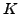
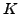

For a peak with given frequency and significance, all possible combinations of previously detected genuine frequencies  , are computed.  is the maximum number of frequencies in a linear combination. The resulting frequency for a linear combination is
, are computed.  is the maximum number of frequencies in a linear combination. The resulting frequency for a linear combination is
| (35) |